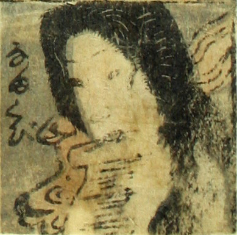

生首；ナマクビ，女；オンナ

生首。女の頭が、口に巻紙をくわえて浮いている。炎がまわりを囲んでいる。
著作者：芳盛／出典：親書誌：U426_nichibunken_0073：しん板化物尽し；シンパンバケモノヅクシ／日付：2006／資源識別子：U426_nichibunken_0073_0008_0000
Copyright (c)2010- International Research Center for Japanese Studies, Kyoto, Japan. All rights reserved.